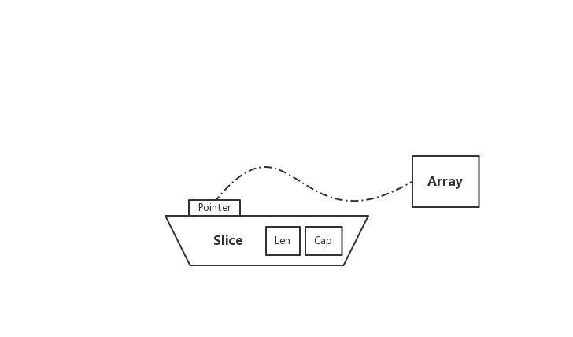
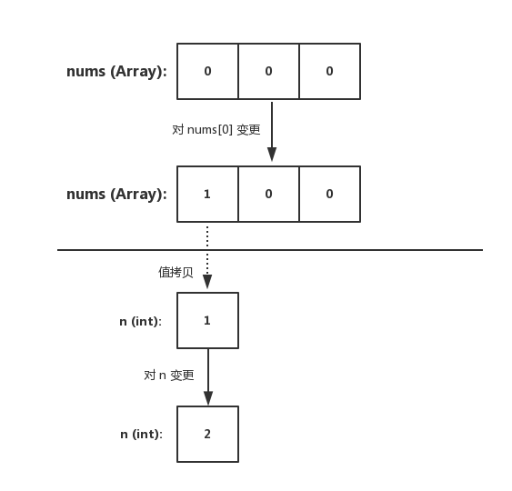
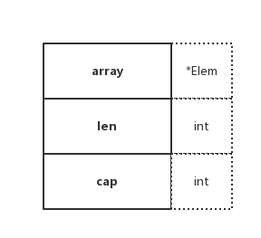
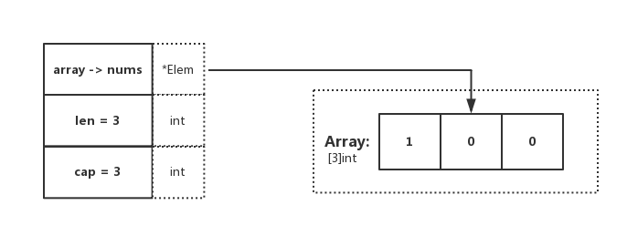
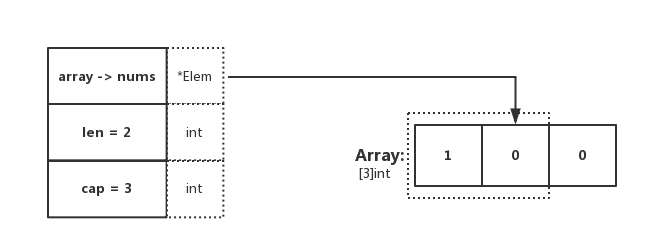
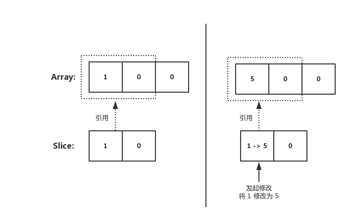
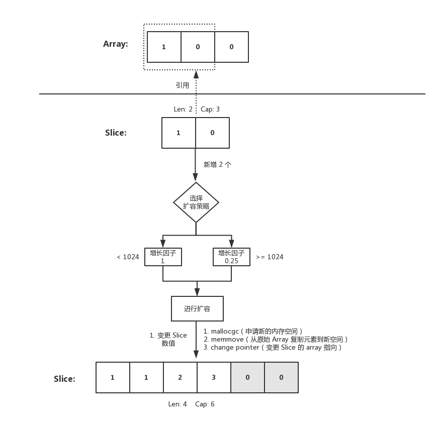
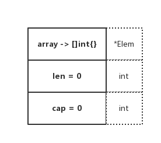
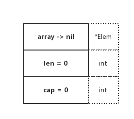

7.1 slice

是什麼
在 Go 中，Slice（切片）是抽象在 Array（陣列）之上的特殊型別。為了更好地瞭解 Slice，第一步需要先對 Array 進行理解。深刻了解 Slice 與 Array 之間的區別後，就能更好的對其底層一番摸索 😄
用法
Array
func main() {
nums := [3]int{}
nums[0] = 1
n := nums[0]
n = 2
fmt.Printf("nums: %v\n", nums)
fmt.Printf("n: %d\n", n)
}
我們可得知在 Go 中，陣列型別需要指定長度和元素型別。在上述程式碼中，可得知 [3]int{} 表示 3 個整數的陣列，並進行了初始化。底層資料儲存為一段連續的記憶體空間，透過固定的索引值（下標）進行檢索

陣列在聲明後，其元素的初始值（也就是零值）為 0。並且該變數可以直接使用，不需要特殊操作
同時陣列的長度是固定的，它的長度是型別的一部分，因此 [3]int 和 [4]int 在型別上是不同的，不能稱為 “一個東西”
輸出結果
nums: [1 0 0]
n: 2
Slice
func main() {
nums := [3]int{}
nums[0] = 1
dnums := nums[:]
fmt.Printf("dnums: %v", dnums)
}
Slice 是對 Array 的抽象，型別為 []T。在上述程式碼中，dnums 變數透過 nums[:] 進行賦值。需要注意的是，Slice 和 Array 不一樣，它不需要指定長度。也更加的靈活，能夠自動擴容
資料結構

type slice struct {
array unsafe.Pointer
len int
cap int
}
Slice 的底層資料結構共分為三部分，如下：
- array：指向所引用的陣列指標（
unsafe.Pointer可以表示任何可定址的值的指標） - len：長度，當前引用切片的元素個數
- cap：容量，當前引用切片的容量（底層陣列的元素總數）
在實際使用中，cap 一定是大於或等於 len 的。否則會導致 panic
示例
為了更好的理解，我們回顧上小節的程式碼便於演示，如下：
func main() {
nums := [3]int{}
nums[0] = 1
dnums := nums[:]
fmt.Printf("dnums: %v", dnums)
}

在程式碼中，可觀察到 dnums := nums[:]，這段程式碼確定了 Slice 的 Pointer 指向陣列，且 len 和 cap 都為陣列的基礎屬性。與圖示表達一致
len、cap 不同
func main() {
nums := [3]int{}
nums[0] = 1
dnums := nums[0:2]
fmt.Printf("dnums: %v, len: %d, cap: %d", dnums, len(dnums), cap(dnums))
}

輸出結果
dnums: [1 0], len: 2, cap: 3
顯然，在這裡指定了 Slice[0:2]，因此 len 為所引用元素的個數，cap 為所引用的陣列元素總個數。與期待一致 😄
建立
Slice 的建立有兩種方式，如下：
var []T或[]T{}func make（[] T，len，cap）[] T
可以留意 make 函式，我們都知道 Slice 需要指向一個 Array。那 make 是怎麼做的呢？
它會在呼叫 make 的時候，分配一個數組並返回引用該陣列的 Slice
func makeslice(et *_type, len, cap int) slice {
maxElements := maxSliceCap(et.size)
if len < 0 || uintptr(len) > maxElements {
panic(errorString("makeslice: len out of range"))
}
if cap < len || uintptr(cap) > maxElements {
panic(errorString("makeslice: cap out of range"))
}
p := mallocgc(et.size*uintptr(cap), et, true)
return slice{p, len, cap}
}
- 根據傳入的 Slice 型別，取得其型別能夠申請的最大容量大小
- 判斷 len 是否合規，檢查是否在 0 < x < maxElements 範圍內
- 判斷 cap 是否合規，檢查是否在 len < x < maxElements 範圍內
- 申請 Slice 所需的記憶體空間物件。若為大型物件（大於 32 KB）則直接從堆中分配
- 返回申請成功的 Slice 記憶體地址和相關屬性（預設返回申請到的記憶體起始地址）
擴容
當使用 Slice 時，若儲存的元素不斷增長（例如透過 append）。當條件滿足擴容的策略時，將會觸發自動擴容
那麼分別是什麼規則呢？讓我們一起看看原始碼是怎麼說的 😄
zerobase
func growslice(et *_type, old slice, cap int) slice {
...
if et.size == 0 {
if cap < old.cap {
panic(errorString("growslice: cap out of range"))
}
return slice{unsafe.Pointer(&zerobase), old.len, cap}
}
...
}
當 Slice size 為 0 時，若將要擴容的容量比原本的容量小，則丟擲異常（也就是不支援縮容操作）。否則，將重新生成一個新的 Slice 返回，其 Pointer 指向一個 0 byte 地址（不會保留老的 Array 指向）
擴容 - 計算策略
func growslice(et *_type, old slice, cap int) slice {
...
newcap := old.cap
doublecap := newcap + newcap
if cap > doublecap {
newcap = cap
} else {
if old.len < 1024 {
newcap = doublecap
} else {
for 0 < newcap && newcap < cap {
newcap += newcap / 4
}
...
}
}
...
}
- 若 Slice cap 大於 doublecap，則擴容後容量大小為 新 Slice 的容量（超了基準值，我就只給你需要的容量大小）
- 若 Slice len 小於 1024 個，在擴容時，增長因子為 1（也就是 3 個變 6 個）
- 若 Slice len 大於 1024 個，在擴容時，增長因子為 0.25（原本容量的四分之一）
注：也就是小於 1024 個時，增長 2 倍。大於 1024 個時，增長 1.25 倍
擴容 - 記憶體策略
func growslice(et *_type, old slice, cap int) slice {
...
var overflow bool
var lenmem, newlenmem, capmem uintptr
const ptrSize = unsafe.Sizeof((*byte)(nil))
switch et.size {
case 1:
lenmem = uintptr(old.len)
newlenmem = uintptr(cap)
capmem = roundupsize(uintptr(newcap))
overflow = uintptr(newcap) > _MaxMem
newcap = int(capmem)
...
}
if cap < old.cap || overflow || capmem > _MaxMem {
panic(errorString("growslice: cap out of range"))
}
var p unsafe.Pointer
if et.kind&kindNoPointers != 0 {
p = mallocgc(capmem, nil, false)
memmove(p, old.array, lenmem)
memclrNoHeapPointers(add(p, newlenmem), capmem-newlenmem)
} else {
p = mallocgc(capmem, et, true)
if !writeBarrier.enabled {
memmove(p, old.array, lenmem)
} else {
for i := uintptr(0); i < lenmem; i += et.size {
typedmemmove(et, add(p, i), add(old.array, i))
}
}
}
...
}
1、取得老 Slice 長度和計算假定擴容後的新 Slice 元素長度、容量大小以及指標地址（用於後續操作記憶體的一系列操作）
2、確定新 Slice 容量大於老 Sice，並且新容量記憶體小於指定的最大記憶體、沒有溢位。否則丟擲異常
3、若元素型別為 kindNoPointers，也就是非指標型別。則在老 Slice 後繼續擴容
- 第一步：根據先前計算的
capmem，在老 Slice cap 後繼續申請記憶體空間，其後用於擴容 - 第二步：將 old.array 上的 n 個 bytes（根據 lenmem）複製到新的記憶體空間上
- 第三步：新記憶體空間（p）加上新 Slice cap 的容量地址。最終得到完整的新 Slice cap 記憶體地址
add(p, newlenmem)（ptr） - 第四步：從 ptr 開始重新初始化 n 個 bytes（capmem-newlenmem）
注：那麼問題來了，為什麼要重新初始化這塊記憶體呢？這是因為 ptr 是未初始化的記憶體（例如：可重用的記憶體，一般用於新的記憶體分配），其可能包含 “垃圾”。因此在這裡應當進行 “清理”。便於後面實際使用（擴容）
4、不滿足 3 的情況下，重新申請並初始化一塊記憶體給新 Slice 用於儲存 Array
5、檢測當前是否正在執行 GC，也就是當前是否啟用 Write Barrier（寫屏障），若啟用則透過 typedmemmove 方法，利用指標運算迴圈複製。否則透過 memmove 方法採取整體複製的方式將 lenmem 個位元組從 old.array 複製到 ptr，以此達到更高的效率
注：一般會在 GC 標記階段啟用 Write Barrier，並且 Write Barrier 只針對指標啟用。那麼在第 5 點中，你就不難理解為什麼會有兩種截然不同的處理方式了
小結
這裡需要注意的是，擴容時的記憶體管理的選擇項，如下：
- 翻新擴充套件：當前元素為
kindNoPointers，將在老 Slice cap 的地址後繼續申請空間用於擴容 - 舉家搬遷：重新申請一塊記憶體地址，整體遷移並擴容
兩個小 “陷阱”
一、同根
func main() {
nums := [3]int{}
nums[0] = 1
fmt.Printf("nums: %v , len: %d, cap: %d\n", nums, len(nums), cap(nums))
dnums := nums[0:2]
dnums[0] = 5
fmt.Printf("nums: %v ,len: %d, cap: %d\n", nums, len(nums), cap(nums))
fmt.Printf("dnums: %v, len: %d, cap: %d\n", dnums, len(dnums), cap(dnums))
}
輸出結果：
nums: [1 0 0] , len: 3, cap: 3
nums: [5 0 0] ,len: 3, cap: 3
dnums: [5 0], len: 2, cap: 3
在未擴容前，Slice array 指向所引用的 Array。因此在 Slice 上的變更。會直接修改到原始 Array 上（兩者所引用的是同一個）

二、時過境遷
隨著 Slice 不斷 append，內在的元素越來越多，終於觸發了擴容。如下程式碼：
func main() {
nums := [3]int{}
nums[0] = 1
fmt.Printf("nums: %v , len: %d, cap: %d\n", nums, len(nums), cap(nums))
dnums := nums[0:2]
dnums = append(dnums, []int{2, 3}...)
dnums[1] = 1
fmt.Printf("nums: %v ,len: %d, cap: %d\n", nums, len(nums), cap(nums))
fmt.Printf("dnums: %v, len: %d, cap: %d\n", dnums, len(dnums), cap(dnums))
}
輸出結果：
nums: [1 0 0] , len: 3, cap: 3
nums: [1 0 0] ,len: 3, cap: 3
dnums: [1 1 2 3], len: 4, cap: 6
往 Slice append 元素時，若滿足擴容策略，也就是假設插入後，原本陣列的容量就超過最大值了
這時候內部就會重新申請一塊記憶體空間，將原本的元素複製一份到新的記憶體空間上。此時其與原本的陣列就沒有任何關聯關係了，再進行修改值也不會變動到原始陣列。這是需要注意的

複製
原型
func copy（dst，src [] T）int
copy 函式將資料從源 Slice複製到目標 Slice。它返回複製的元素數。
示例
func main() {
dst := []int{1, 2, 3}
src := []int{4, 5, 6, 7, 8}
n := copy(dst, src)
fmt.Printf("dst: %v, n: %d", dst, n)
}
copy 函式支援在不同長度的 Slice 之間進行復制，若出現長度不一致，在複製時會按照最少的 Slice 元素個數進行復制
那麼在原始碼中是如何完成複製這一個行為的呢？我們來一起看看原始碼的實作，如下：
func slicecopy(to, fm slice, width uintptr) int {
if fm.len == 0 || to.len == 0 {
return 0
}
n := fm.len
if to.len < n {
n = to.len
}
if width == 0 {
return n
}
...
size := uintptr(n) * width
if size == 1 {
*(*byte)(to.array) = *(*byte)(fm.array) // known to be a byte pointer
} else {
memmove(to.array, fm.array, size)
}
return n
}
- 若源 Slice 或目標 Slice 存在長度為 0 的情況，則直接返回 0（因為壓根不需要執行復制行為）
- 透過對比兩個 Slice，取得最小的 Slice 長度。便於後續操作
- 若 Slice 只有一個元素，則直接利用指標的特性進行轉換
- 若 Slice 大於一個元素，則從
fm.array複製size個位元組到to.array的地址處（會覆蓋原有的值）
"奇特"的初始化
在 Slice 中流傳著兩個傳說，分別是 Empty 和 Nil Slice，接下來讓我們看看它們的小區別 🤓
Empty
func main() {
nums := []int{}
renums := make([]int, 0)
fmt.Printf("nums: %v, len: %d, cap: %d\n", nums, len(nums), cap(nums))
fmt.Printf("renums: %v, len: %d, cap: %d\n", renums, len(renums), cap(renums))
}
輸出結果：
nums: [], len: 0, cap: 0
renums: [], len: 0, cap: 0
Nil
func main() {
var nums []int
}
輸出結果：
nums: [], len: 0, cap: 0
想一想
乍一看，Empty Slice 和 Nil Slice 好像一模一樣？不管是 len，還是 cap 都為 0。好像沒區別？我們再看看如下程式碼：
func main() {
var nums []int
renums := make([]int, 0)
if nums == nil {
fmt.Println("nums is nil.")
}
if renums == nil {
fmt.Println("renums is nil.")
}
}
你覺得輸出結果是什麼呢？你可能已經想到了，最終的輸出結果：
nums is nil.
為什麼
Empty

Nil

從圖示中可以看出來，兩者有本質上的區別。其底層陣列的指向指標是不一樣的，Nil Slice 指向的是 nil，Empty Slice 指向的是實際存在的空陣列地址
你可以認為，Nil Slice 代指不存在的 Slice，Empty Slice 代指空集合。兩者所代表的意義是完全不同的
總結
透過本文，可得知 Go Slice 相當靈活。不需要你手動擴容，也不需要你關注加多少減多少。對 Array 是動態引用，是 Go 型別的一個極大的補充，也因此在應用中使用的更多、更便捷
雖然有個別要注意的 “坑”，但其實是合理的。你覺得呢？😄